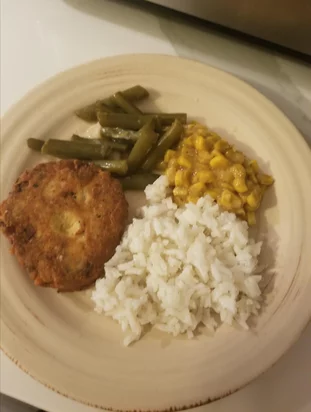

Grandma's Famous Salmon Cakes

This a recipe for my Grandmother's famous salmon cakes.
It is a family recipe that has been passed down through generations. Serve with macaroni and cheese or any other type of side dish.
Ingredients
- 1 (14.75 ounce) can salmon, drained and flaked
- 2 eggs, beaten
- 1 small onion, diced
- 1 teaspoon ground black pepper
- 3 tablespoons vegetable oil
Directions
- Pick through the salmon and remove any bones. In a mixing bowl, beat the eggs and add the diced onion, salmon and pepper. Mix thoroughly.
- Shape into 2 ounce patties; about 7 or 8 patties. In a large skillet over medium heat, heat the oil. Fry each patty for 5 minutes on each side or until crispy and golden brown.